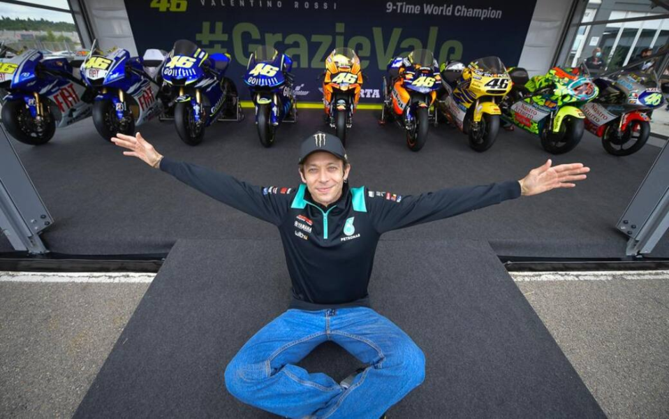

VR46
Valentino Rossi

9 Wereldkampioenschappen, 9 Motoren
Tijdlijn: 9 Wereldkampioenschappen
- 1997
Wereldkampioen 125cc op de Aprilia
- 1999
Wereldkampioen 250cc op de Aprilia
- 2001
Wereldkampioen 500cc op de Honda
- 2002
Wereldkampioen MotoGP op de Honda
- 2003
Wereldkampioen MotoGP op de Honda
- 2004
Wereldkampioen MotoGP op de Yamaha
- 2005
Wereldkampioen MotoGP op de Yamaha
- 2008
Wereldkampioen MotoGP op de Yamaha
- 2009
Wereldkampioen MotoGP op de Yamaha
Huidige periode: Autocoureur

Sinds zijn afscheid van de MotoGP eind 2021 racet Valentino Rossi in auto's, bij het Belgische team WRT. Met zijn vertrouwde nummer 46 rijdt hij in 2026 een volledig seizoen in de GT World Challenge Europe met een BMW M4 GT3, na twee jaar te hebben deelgenomen aan het FIA World Endurance Championship (WEC) inclusief de 24 uur van Le Mans.